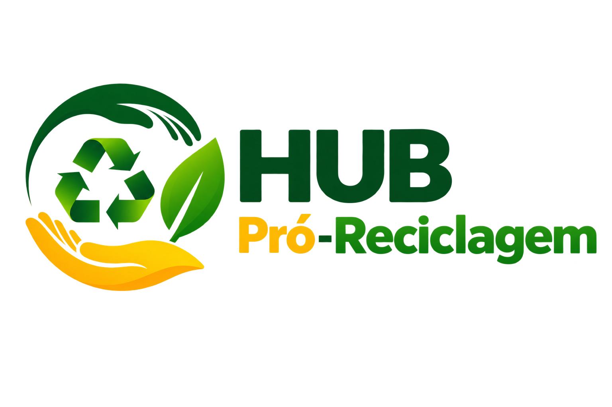
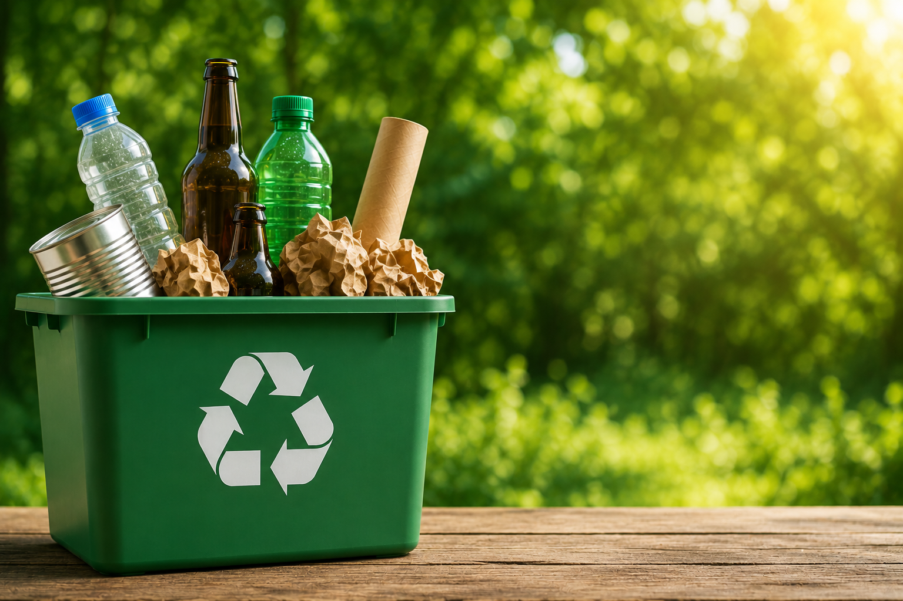

🏠
Em casa
Separe os materiais recicláveis em casa de forma correta.

Acesso AdministrativoReciclar é transformar materiais que seriam descartados em novos recursos. Conheça os materiais que podem ser reciclados e como cada um deles faz a diferença para o meio ambiente e para a nossa comunidade.
♻ Entenda a importância da reciclagem
Cada escolha consciente ajuda a construir um futuro mais sustentável para todos.
🍃Separe os materiais recicláveis em casa de forma correta.
Os materiais são coletados pelas cooperativas ou pelo serviço de coleta.
Os materiais são separados e classificados de acordo com o tipo.
Os materiais passam por processos que transformam em novas matérias-primas.
Esses materiais voltam para a indústria e se transformam em novos produtos.


Lave sempre que possível os materiais recicláveis para evitar odores e contaminações.
Retire resíduos, esvazie embalagens e deixe secar antes de separar para a coleta.
Separe os materiais por categoria para facilitar a triagem.
Materiais que não podem ser reciclados devem ser destinados corretamente.
Encontre os pontos de coleta mais próximos de você no Mapa da Coleta.